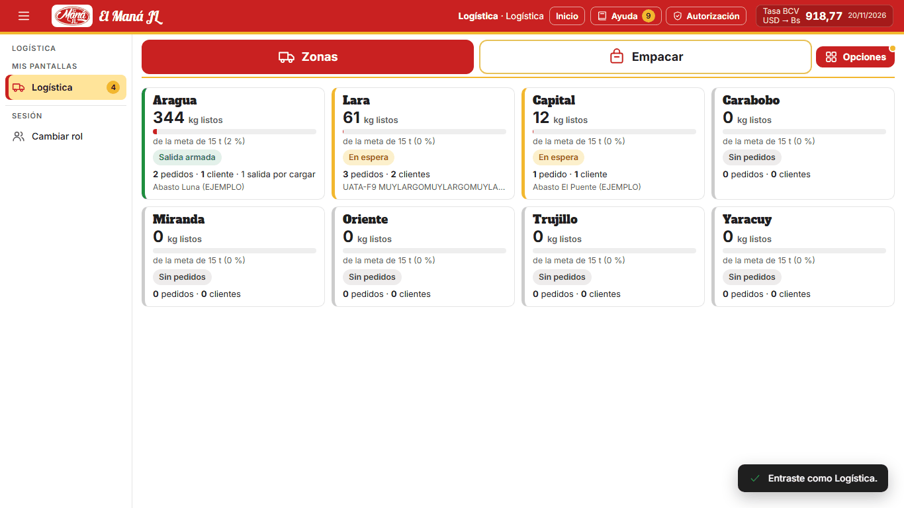
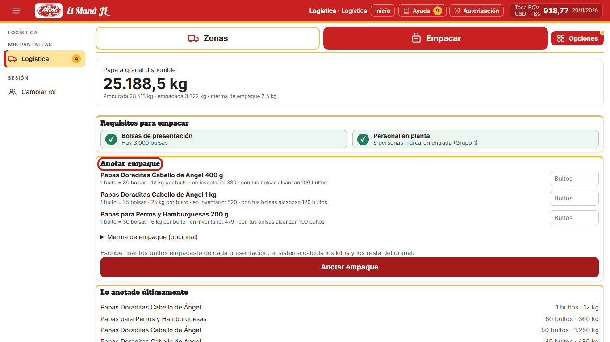
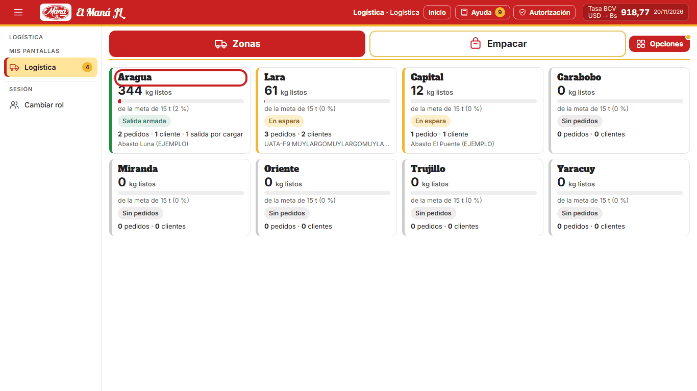
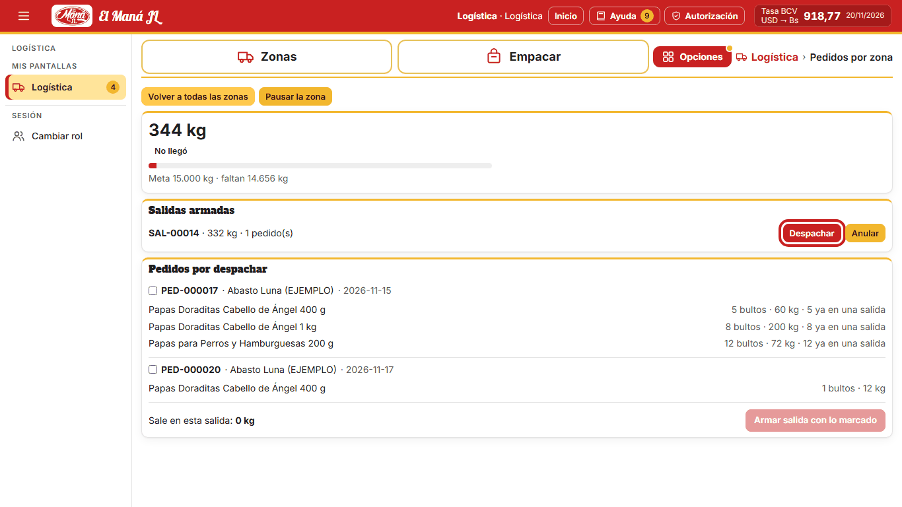
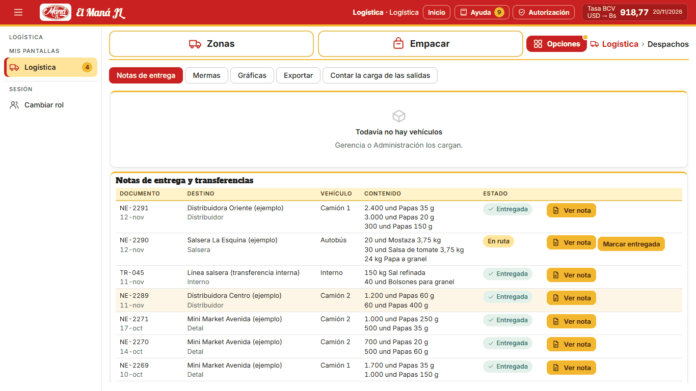
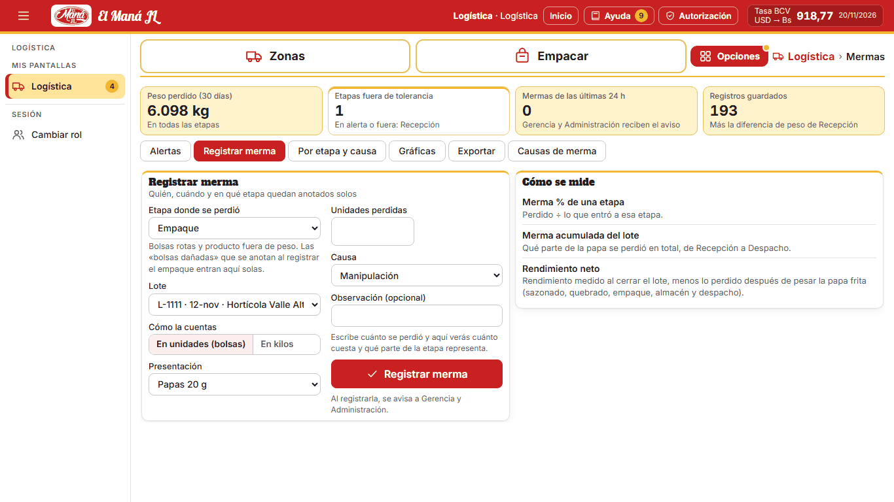
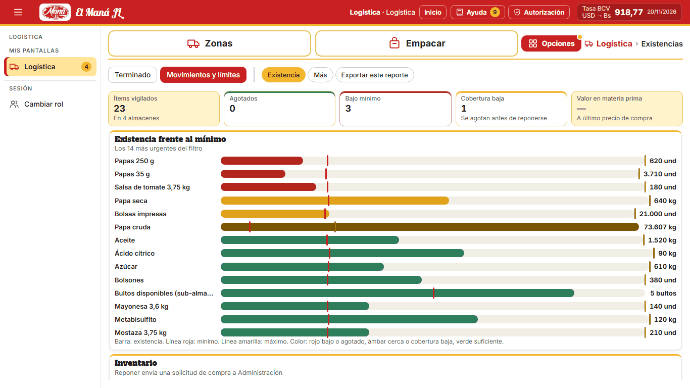

Logística empaca la papa terminada, arma las salidas por zona, despacha con vehículo y chofer, cuenta la carga y marca las entregas. Si se pierde algo al empacar, anota la merma.
Logística no ve precios ni costos.
Mi día en 5 pasos
Entra al sistema y elige Logística.
En Empacar, mira los requisitos y anota lo empacado.
En Zonas, mira los pedidos del día.
Arma la salida y despacha.
Cuenta la carga, marca en ruta y marca entregada.
Cómo entro y elijo mi puesto
Abre el sistema.
Pulsa el botón Logística.
Se abre Zonas.

Zonas del día
Cómo anoto lo empacado
Pulsa el botón grande Empacar.
Mira Papa a granel disponible.
Mira Requisitos para empacar: Bolsas de presentación y Personal en planta deben salir en verde.
En Anotar empaque, escribe los Bultos de cada presentación.
Si hubo pérdida, abre Merma de empaque (opcional) y escribe los kilos y el motivo.
Pulsa Anotar empaque.

Empacar con requisitos
No hace falta un turno abierto. El sistema calcula los kilos, descuenta las bolsas y suma al inventario: Ventas puede vender enseguida. No te deja pasar de lo disponible.
Cómo miro las zonas del día
Pulsa el botón grande Zonas.
Cada tarjeta es una zona (Aragua, Lara, Capital...) y muestra los kilos listos y los pedidos.
Toca la tarjeta de una zona para abrirla.

Tarjetas de zonas
Es el punto de partida de Logística.
Cómo armo y despacho una zona
Pulsa Zonas y toca la tarjeta de la zona.
En Pedidos por despachar, marca los pedidos que salen.
Pulsa Armar salida con lo marcado.
La salida aparece en Salidas armadas.
Si quedas por debajo de la meta o partes un pedido, escribe el motivo.
Pulsa Despachar en la salida.
Elige el vehículo y el chofer.

Armar la salida
Pausar la zona pide un motivo. Al despachar se emiten las notas de entrega o facturas.
Cómo cuento la carga y marco la entrega
Pulsa Opciones y elige Despachos.
Abre la pestaña Contar la carga de las salidas.
Cuenta la carga y pulsa Guardar la carga.
Pulsa Marcar en ruta al salir.
Pulsa Marcar entregada al llegar.

Despachos
En Notas de entrega, Ver nota abre la nota. Si aún no hay vehículos, Gerencia o Administración los cargan.
Cómo anoto una merma
Pulsa Opciones y elige Mermas.
Abre la pestaña Registrar merma.
Elige la Etapa donde se perdió y el Lote.
Elige cómo cuentas: En unidades (bolsas) o En kilos.
Escribe las Unidades perdidas y elige la Causa.
Pulsa Registrar merma.

Registrar merma
Cómo veo el inventario disponible
Pulsa Opciones y elige Existencias.
Abre Movimientos y límites.
Mira la barra de cada producto: verde si alcanza, amarillo si se acerca al mínimo, rojo si está por debajo.

Existencias frente al mínimo
Logística solo lo mira.
Si algo sale mal
El botón «Anotar empaque» está apagado
Mira qué requisito sale en rojo.
Si faltan bolsas de presentación: pide a Administración que compre.
Si falta personal: pide a Recursos humanos que marque la asistencia.